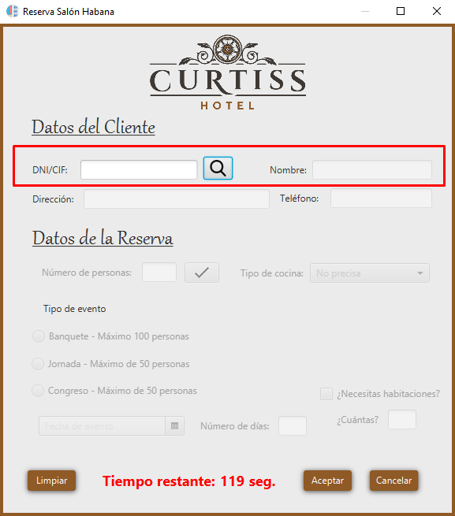
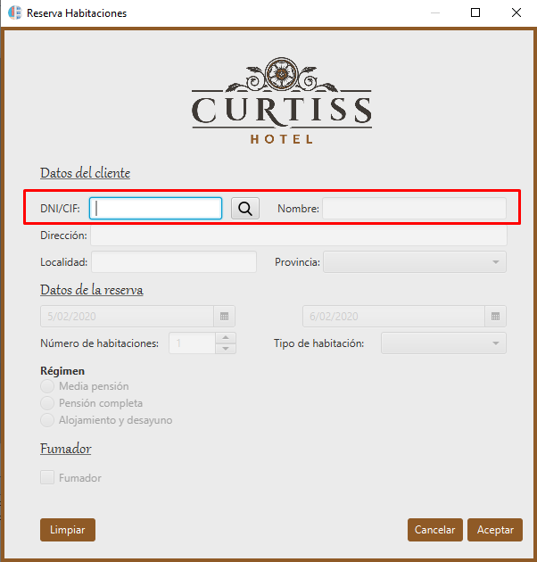

Esta ventana de ayuda le indicará paso a paso como funciona la busqueda de Clientes en ambas reservas (Reserva Salón y Reserva Habitaciones).

Este informe nos mostrará un listado de todos los clientes por orden alfabético (A-Z).
Este informe nos mostrará un listado de todas las reservas de las Habitaciones, ordenadas por clientes y fechas de entrada.
Este informe nos mostrará un listado de todas las reservas del Salón, ordenadas por clientes y fechas de entrada.